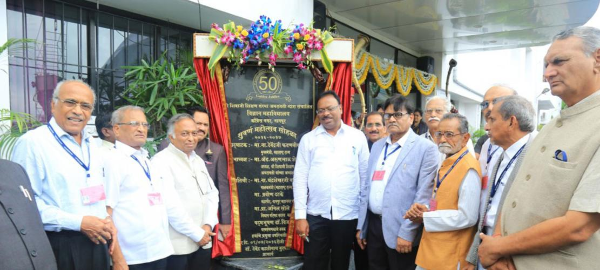
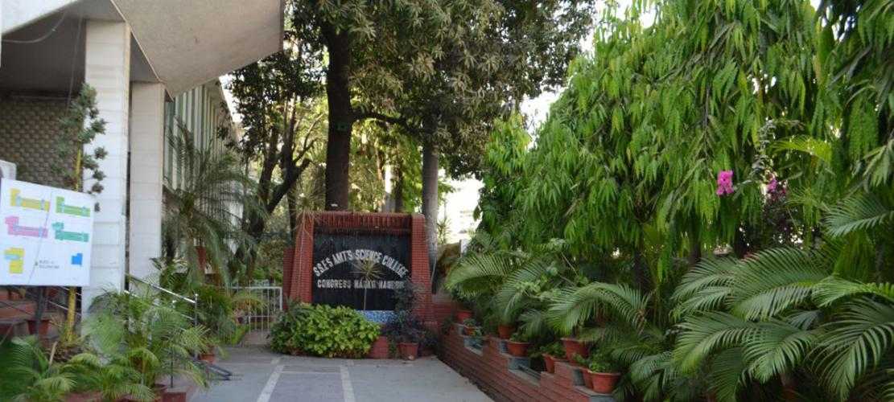
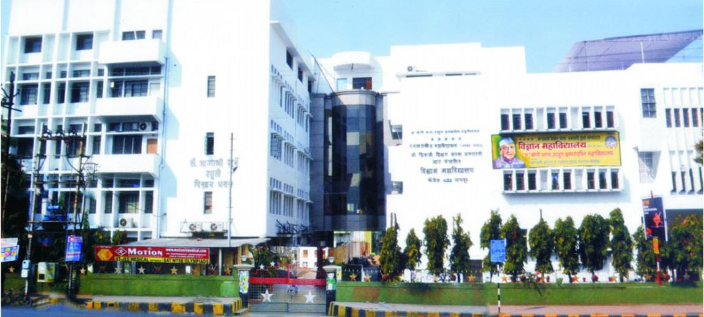

Science College, Congress Nagar , Nagpur
is one of the 303 institutions run by Shri Shivaji Education Society, Amravati is a premier institutionof higher learning in Central India affiliated to R.T.M. Nagpur University, Nagpur. Tamso Ma
Jyotirgmaya (To lead from darkness to light) is the mission of the institution. National
Assessment and Accreditation Council (NAAC) accredited the college with Five Star level in the
year 2002, re-accredited with CGPA of 3.51 on four point scale at A+ grade in June 2017 and
identified by UGC as College with Potential for Excellence. The College is an institutional
member of Asia Pacific Quality Network (APQN). With its competent galaxy of faculty members,
the college has been rendering sincere services in the field of higher education since 1967.
This is a single faculty college with a variety of courses both at 10+2 stage and
degree level and offers PG courses with recognised centres of Higher Learning and Research
in Microbiology, Chemistry, Computer Science, Physics and Mathematics.

Milestones of college
1960 Establishment in the Campus of DNC, Nagpur1964 Independent Science College came into existence
1967 Recognition under 2F and 12B by UGC
1973 Construction of Elevated Lecture halls
1983 Introduced Microbiology and Statistics Departments
1984 Introduced Electronics and Geology Departments
1990 Introduced Computer Science at UG Level
1994 Introduced PGDCS &A Course
1998 Introduced M. Sc. (Computer Science)
2002 "FIVE STAR" Accreditation by NAAC, Bangalore
2003 Introduced Computer Maintenance (Vocational Course)
 2004 Identified "College with Potential for Excellence" by UGC, New Delhi
2005 Introduced Biotechnology at UG Level
2005 Introduced M. Sc. (Microbiology)
2006 Introduced M. Sc. (Chemistry)
2008 Introduced PG Diploma in Nanotechnology
2016 INSPIRE Camp-V
2017 Reassessed with A+ Grade with CGPA 3.51
2017 Construction of Block-C
2017 International Conference on Life Sciences
2018 APQN Conference
2018 INSPIRE Camp-VI
2019 INSPIRE Camp-VII
2019 National Conference ISCA Sponsored
2019 INSPIRE Camp-VIII
2019 Status of Mentor College under Paramarsh Scheme